library(tidyverse)
library(FactoMineR)
library(factoextra)Multi homing in the music platformscape
Multi-homing
There is a large literature about multi-homing, mainly from economics and focused on the competition function . Multi-homing is important because it reduce switching cost and other market barriers.
Multi-homing come from complementary between platforms. They could be vertical or horizontal, vertical when they complement different activities ; search and order, horizontal when they extend the space of choice.
Multi-homing is expected when engagement is high and usages are sophisticated. A dj need an intense level of search, a sophisticated practice of curation, and a clear willingness to contribute as a productor : playlist, even mash-up. Ordinary consumption of music favor hits and fashionable tunes that we listen as complement of others activities.
Some elements of literature :
Hong Kong University of Science and Technology et al. (2014)
Stewart and Cunningham (2017)
Ozalp and Cennamo (2017)
Haan, Zwart, and Stoffers (2021)
Scott Morton and Athey (2021)
Chen et al. (2022)
The sociology of reception has develop a theory of cultural omnivorism
Tools
Data
df <- read_csv("MusicPlateform2.csv")%>%
rename(ID=1,
Rock=2,
PopInter=3,
HipHop=4,
World=5,
Salsa=6,
Classique=7,
Techno=8,
HardRock=9,
Baroque=10,
Folk=11,
Reggae=12,
ChansonFrançaise=13,
RockAlt=14,
Dance=15,
Jazz=16,
AfroPop=17,
Opera=18,
Arabic=19,
Blues=20,
JK_pop=21,
Rap=22,
SoulFunk=23,
S_travail=24,
S_Live=25,
S_Voiture=26,
S_Menage=27,
S_Ami=28,
S_Bars=29,
S_Transport=30,
S_Lire=31,
S_Douche=32,
D_Vynil=33,
D_Streaming=34,
D_smartphone=35,
D_concert=36,
D_laptop=37,
D_ecouteurs=38,
D_mix=39,
D_radiotv=40,
P_Youtube=42,
P_Spotify=43,
P_Deezer=44,
P_Souncloud=45,
P_Bandcamp=46,
P_Discog=47,
P_Tidal=48,
P_Amazon=49,
P_Mixcloud=50,
P_AppleM=51,
P_Qobuz=52,
P_Pandora=53,
P_Netease=54,
Spending=69,
Value=70)Prefered styles
foo<- df %>%
select(1:23) %>%
pivot_longer(-ID,names_to="variable", values_to = "value")
foo$value[foo$value=="J'aime beaucoup"]<-"J'adore"
foo$value[foo$value=="J'aime pas mal"]<-"J'adore"
foo$value[foo$value=="J'aime un peu"]<-"Je n'aime pas"
foo$value[foo$value=="J'aime pas trop"]<-"Je n'aime pas"
foo$value <- factor(foo$value, levels = c("Je n'aime pas",
"Je ne connais pas",
"Je peux aimer",
"J'adore"))
foo<-foo%>%
group_by(variable, value)%>%
summarise(n=n())
col<-c("Red","Grey","Gold","Darkgreen")
ggplot(foo, aes(x = variable, y=n, group=value))+
geom_bar(stat="identity", aes(fill=value))+
coord_flip()+
labs(x=NULL)+
scale_fill_manual(values=col)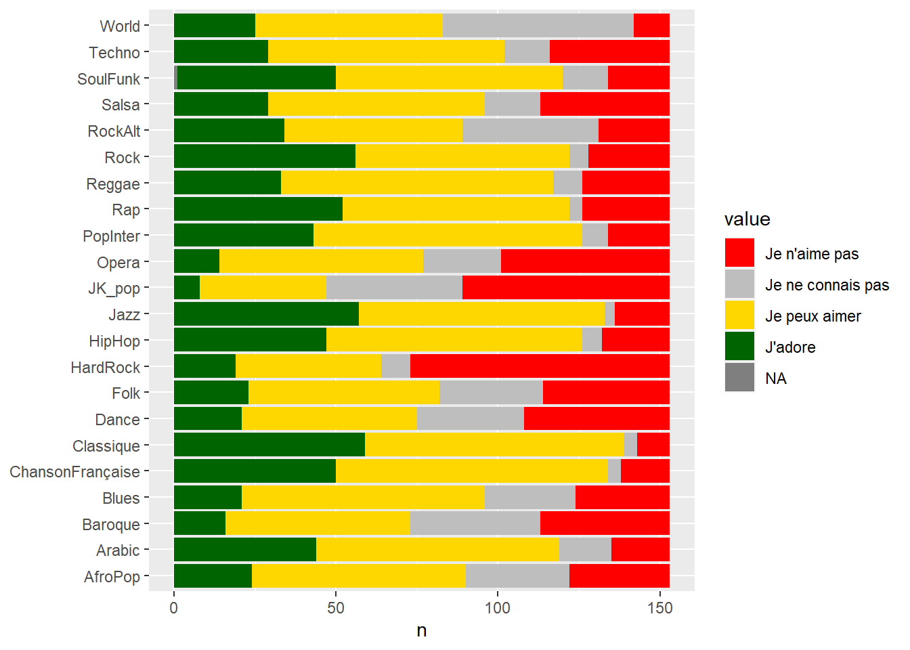
#data preparation
foo<- df[, 1:23] %>%
pivot_longer(-ID,names_to="variable", values_to = "value")
foo$value[foo$value=="J'aime beaucoup"]<-"J'adore"
foo$value[foo$value=="J'aime pas mal"]<-"J'adore"
foo$value[foo$value=="J'aime un peu"]<-"Je n'aime pas"
foo$value[foo$value=="J'aime pas trop"]<-"Je n'aime pas"
foo$value2[foo$value=="Je n'aime pas"]<-1
foo$value2[foo$value=="Je ne connais pas"]<-2
foo$value2[foo$value=="Je peux aimer"]<-3
foo$value2[foo$value=="J'adore"]<-4
foo<-foo %>%
select(-value)%>%
pivot_wider(ID,names_from = "variable", values_from = "value2")
#PCA
fit<-PCA(foo[2:19],ncp = 4, graph =FALSE)
fviz_eig(fit, addlabels = TRUE, ylim = c(0, 30))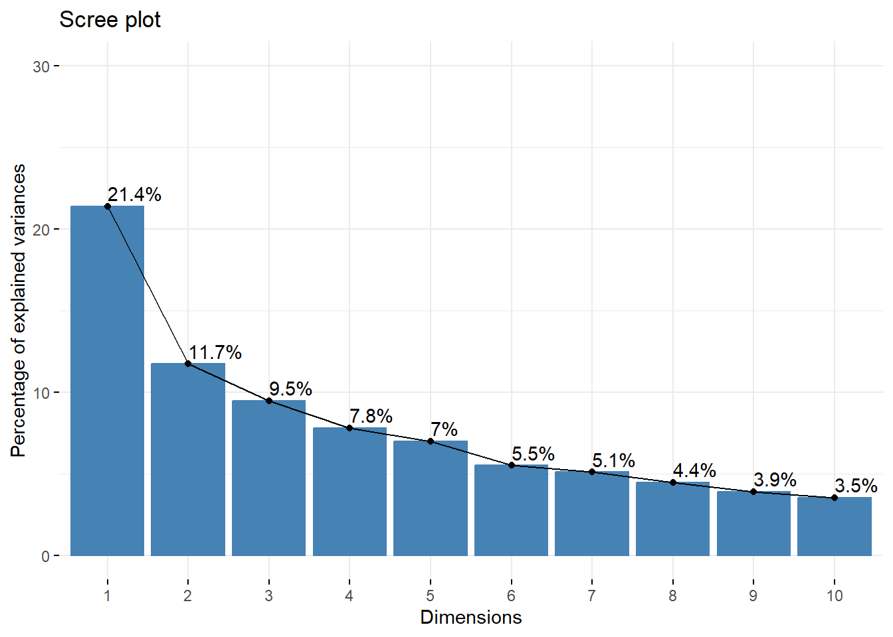
fviz_pca_var(fit, axes = c(1, 3), col.var = "cos2",
gradient.cols = c("#00AFBB", "#E7B800", "#FC4E07"),
repel = TRUE # Évite le chevauchement de texte
)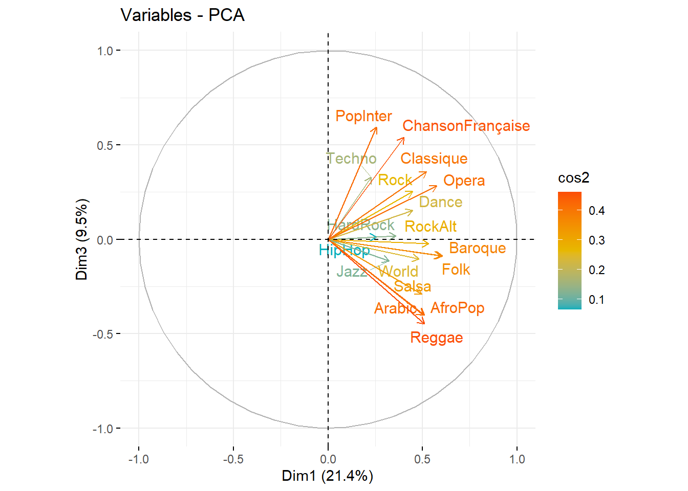
# Dissimilarity matrix
d <- dist(t(foo[2:19]), method = "manhattan")
# Hierarchical clustering using Ward Linkage
hc1 <- hclust(d, method = "ward" )
sub_grp <- cutree(hc1, k = 5)
# Plot the obtained dendrogram
plot(hc1, cex = 0.6, hang = -1)
rect.hclust(hc1, k = 5, border = 2:5)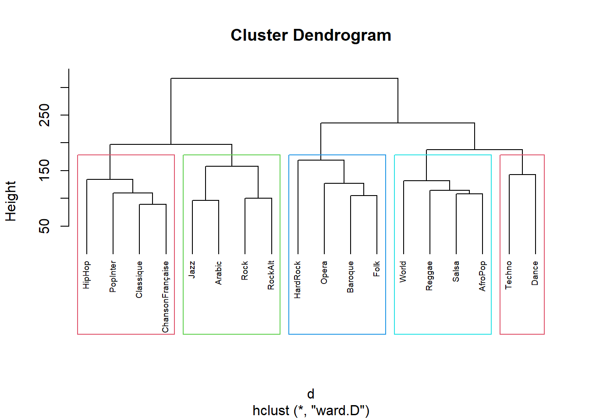
fviz_cluster(list(data = d, cluster = sub_grp))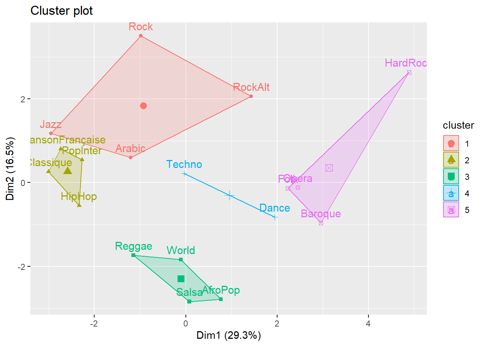
Segmentation
k=4
# Dissimilarity matrix
d <- dist(foo[2:23], method = "manhattan")
# Hierarchical clustering using Ward Linkage
hc1 <- hclust(d, method = "ward" )
sub_grp <- cutree(hc1, k = k)
# Plot the obtained dendrogram
plot(hc1, cex = 0.6, hang = -1)
rect.hclust(hc1, k = k, border = 2:5)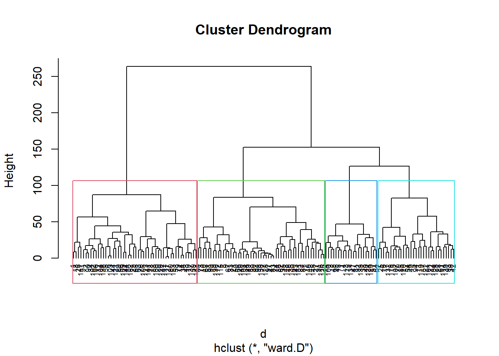
fviz_cluster(list(data = d, cluster = sub_grp))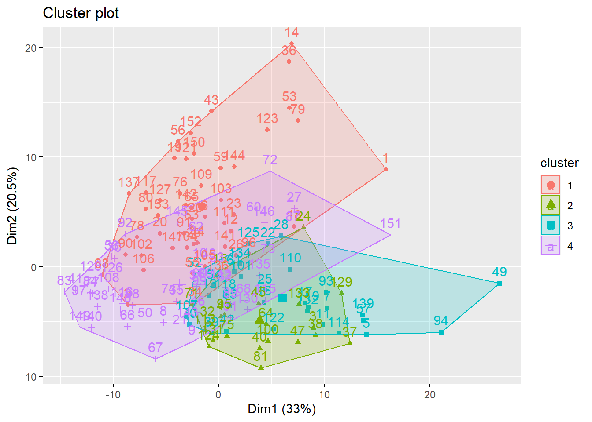
foo1<-cbind(foo,sub_grp)%>%
pivot_longer(-c(ID,sub_grp),names_to="Variable", values_to="Value") %>%
group_by(sub_grp, Variable, Value)%>%
summarise(n=n())
foo2<-cbind(foo,sub_grp)%>%
pivot_longer(-c(ID,sub_grp),names_to="Variable", values_to="Value") %>%
group_by(sub_grp, Variable)%>%
summarise(m=n())
foo3<- foo1 %>%
left_join(foo2) %>%
mutate(f=n / m)
ggplot(foo3, aes(x = Variable, y=f, group=Value))+
geom_bar(stat="identity", aes(fill=as.factor(Value)))+
facet_wrap(vars(sub_grp), ncol=5)+
coord_flip()+
scale_fill_manual(values = col)+
labs(x=NULL, y=NULL, title=" Segmentation")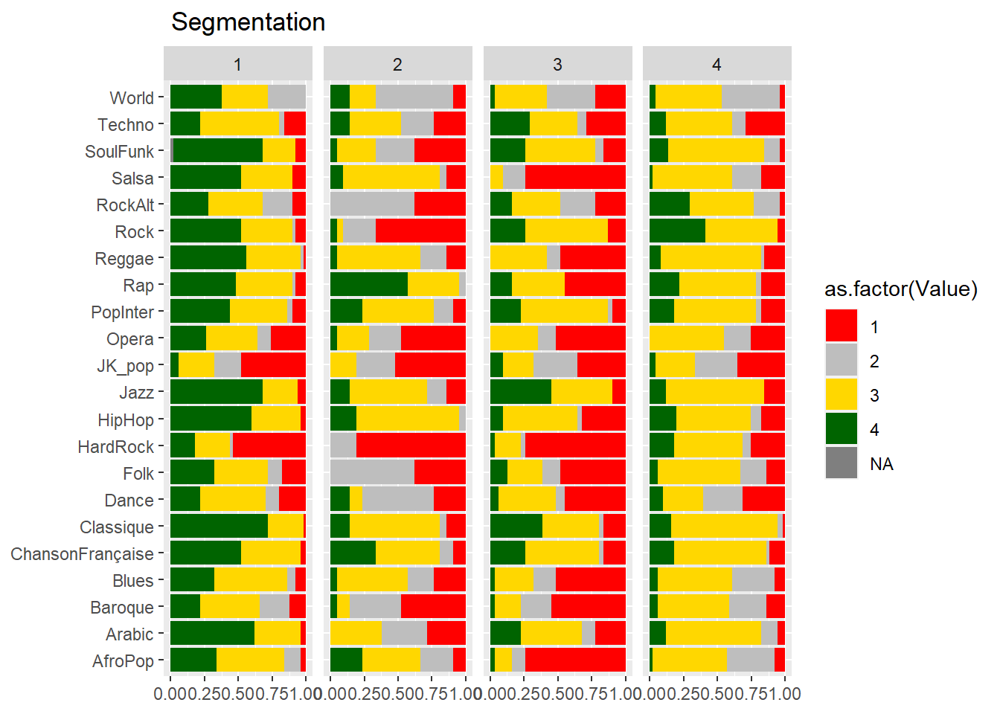
Usages
foo<- df %>%
select(1,24:40)%>%
pivot_longer(-ID,names_to="variable", values_to = "value")
table(foo$value)
Fréquemment Jamais Parfois Souvent
2 608 823 1168 foo<-foo%>%
group_by(variable, value)%>%
summarise(n=n())
col<-c("Red","Grey","Gold","Darkgreen")
ggplot(foo, aes(x = variable, y=n, group=value))+
geom_bar(stat="identity", aes(fill=value))+
coord_flip()+
labs(x=NULL)+
scale_fill_manual(values=col)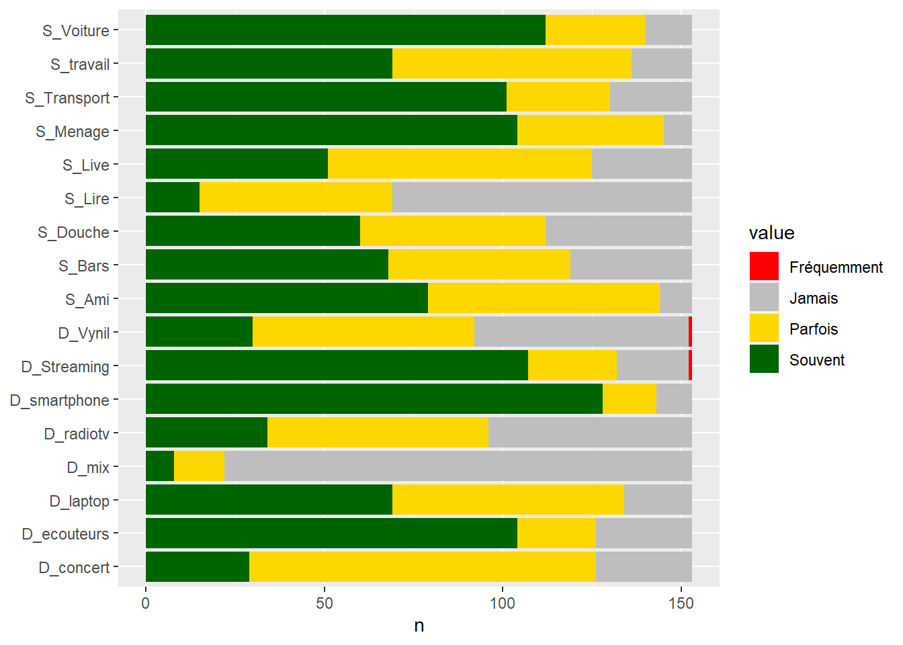
#data preparation
# pour le clustering
k=4
foo<- df %>%select(1, 24:40) %>%
pivot_longer(-ID,names_to="variable", values_to = "value")
foo$value[foo$value=="Souvent"]<-2
foo$value[foo$value=="Parfois"]<-1
foo$value[foo$value=="Jamais"]<-0
foo$value<- as.numeric(foo$value)
foo<-foo %>%
pivot_wider(ID,names_from = "variable", values_from = "value")
#PCA
fit<-PCA(foo[2:18],ncp = 4)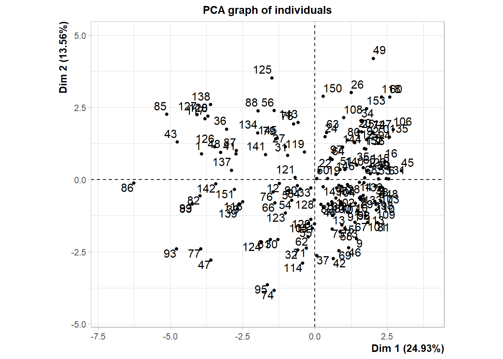
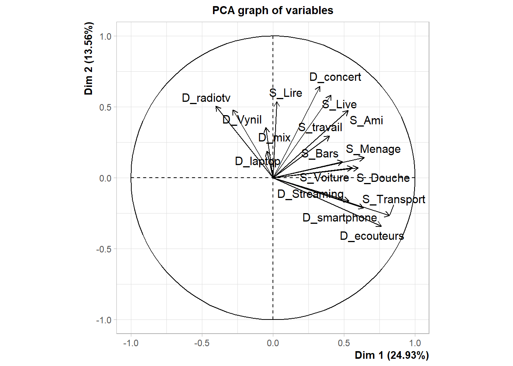
fviz_eig(fit, addlabels = TRUE, ylim = c(0, 30))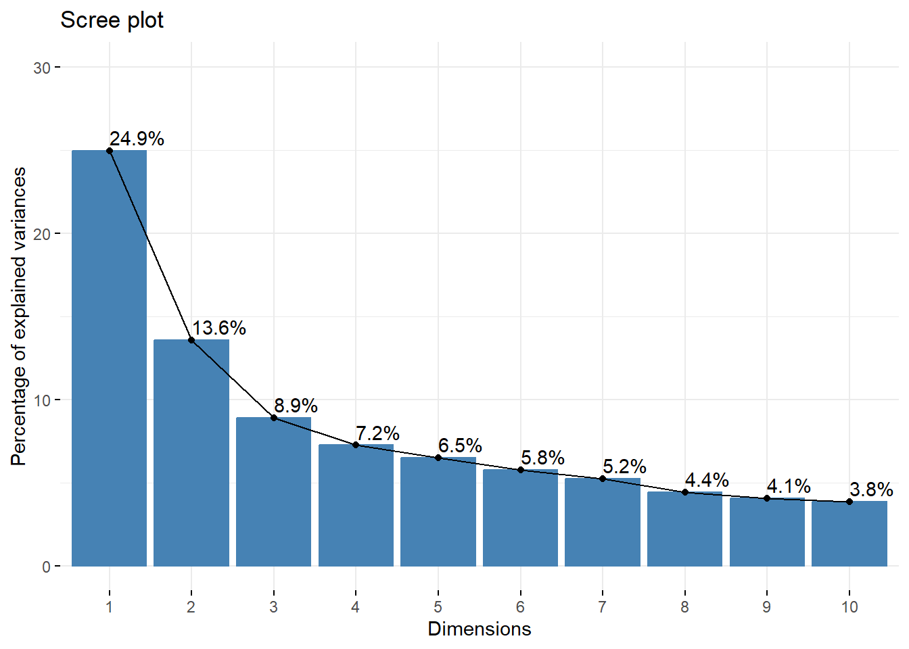
fviz_pca_var(fit, col.var = "cos2",
gradient.cols = c("#00AFBB", "#E7B800", "#FC4E07"),
repel = TRUE # Évite le chevauchement de texte
)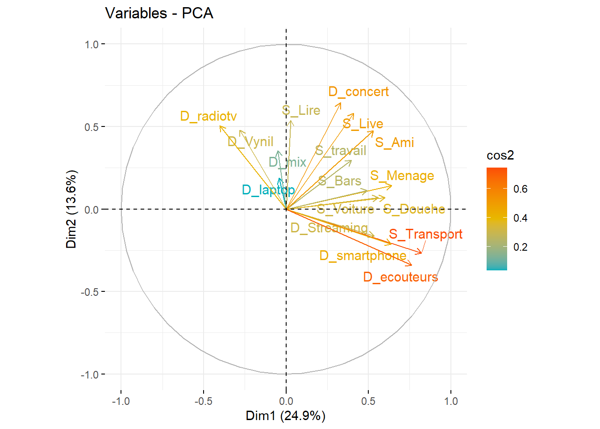
# Dissimilarity matrix
d <- dist(t(foo[2:18]), method = "manhattan")
# Hierarchical clustering using Ward Linkage
hc1 <- hclust(d, method = "ward" )
sub_grp <- cutree(hc1, k = k)
# Plot the obtained dendrogram
plot(hc1, cex = 0.6, hang = -1)
rect.hclust(hc1, k = k, border = 2:5)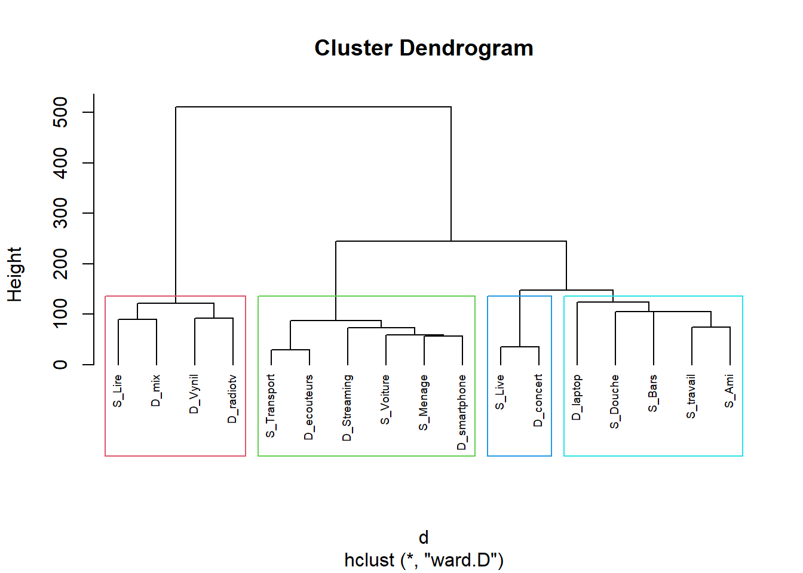
fviz_cluster(list(data = d, cluster = sub_grp))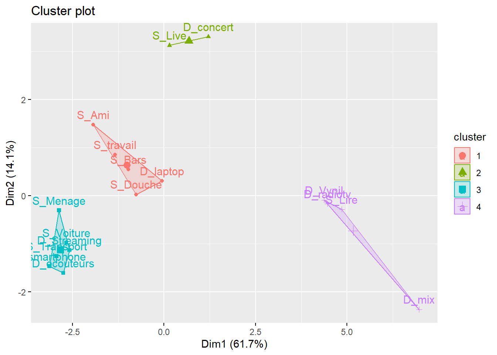
Platforms
foo<- df %>%
select(1,42:54)%>%
pivot_longer(-ID,names_to="variable", values_to = "value")
table(foo$value)
Jamais Parfois Souvent
1518 220 234 foo<-foo%>%
group_by(variable, value)%>%
summarise(n=n())
col<-c("Red","Gold2","Gold1","Darkgreen")
ggplot(foo, aes(x = reorder(variable,n), y=n, group=value))+
geom_bar(stat="identity", aes(fill=value))+
coord_flip()+
labs(x=NULL)+
scale_fill_manual(values=col)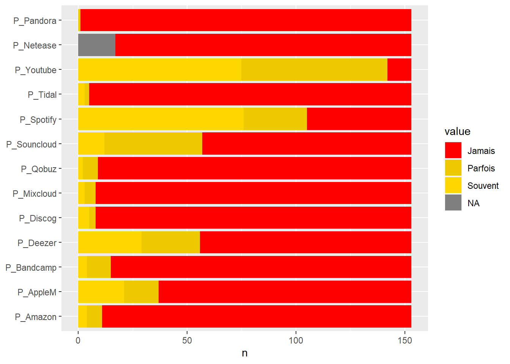
#data preparation
# pour le clustering
k=5
foo<- df %>%select(1, 42:54) %>%
pivot_longer(-ID,names_to="variable", values_to = "value")
foo$value[foo$value=="Souvent"]<-2
foo$value[foo$value=="Parfois"]<-1
foo$value[foo$value=="Jamais"]<-0
foo$value<- as.numeric(foo$value)
foo<-foo %>%
pivot_wider(ID,names_from = "variable", values_from = "value")
#PCA
fit<-PCA(foo[,2:14],ncp = 4)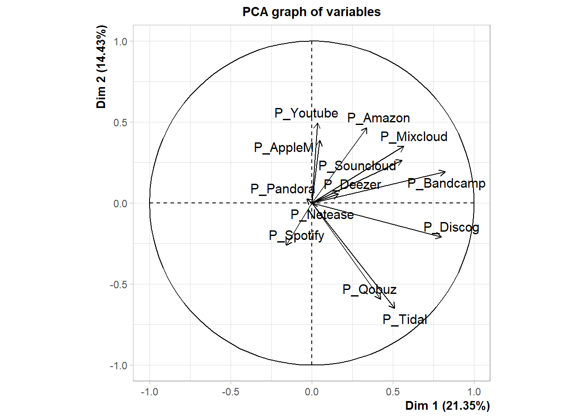
fviz_eig(fit, addlabels = TRUE, ylim = c(0, 30))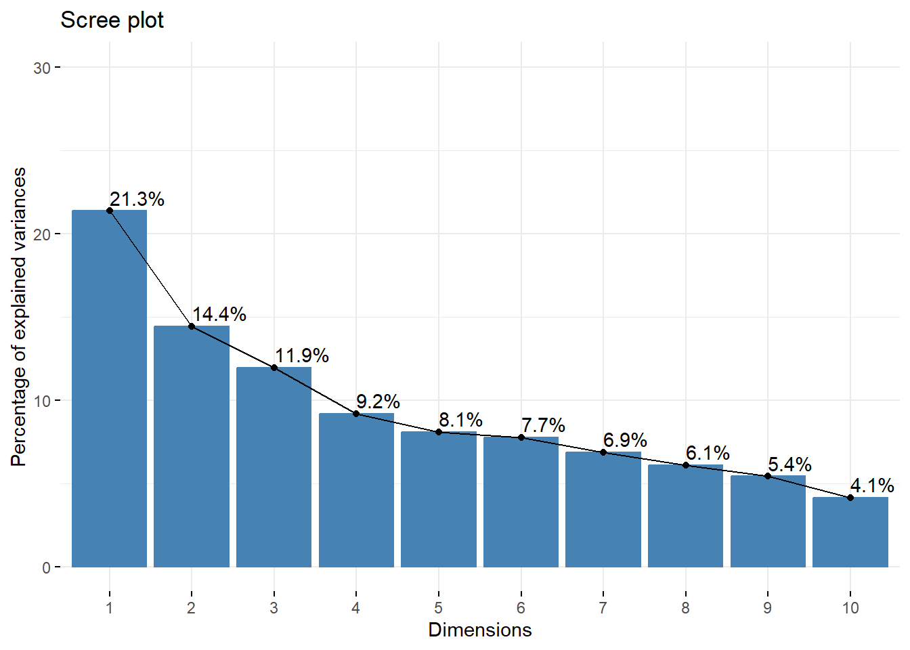
fviz_pca_var(fit, col.var = "cos2",
gradient.cols = c("#00AFBB", "#E7B800", "#FC4E07"),
repel = TRUE # Évite le chevauchement de texte
)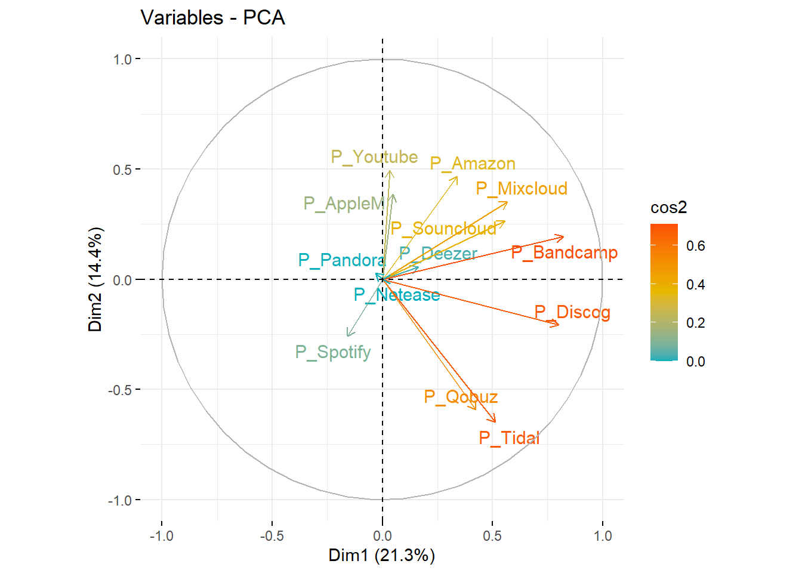
# Dissimilarity matrix
d <- dist(t(foo[2:14]), method = "euclidean")
# Hierarchical clustering using Ward Linkage
hc1 <- hclust(d )
sub_grp <- cutree(hc1, k = k)
# Plot the obtained dendrogram
plot(hc1, cex = 0.6, hang = -1)
rect.hclust(hc1, k = k, border = 2:5)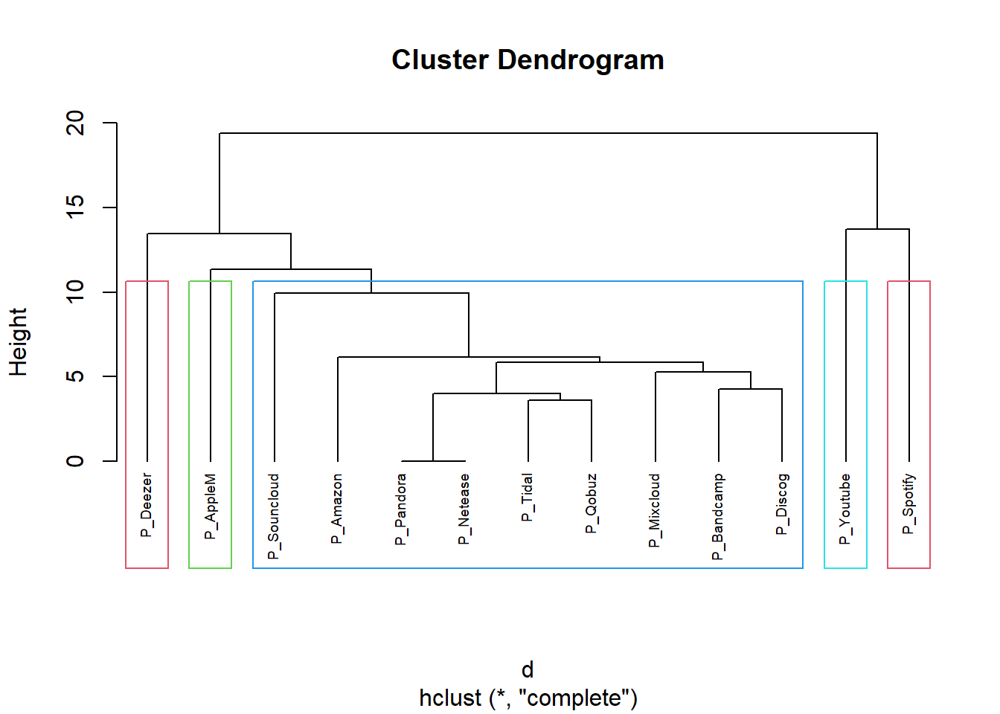
fviz_cluster(list(data = d, cluster = sub_grp))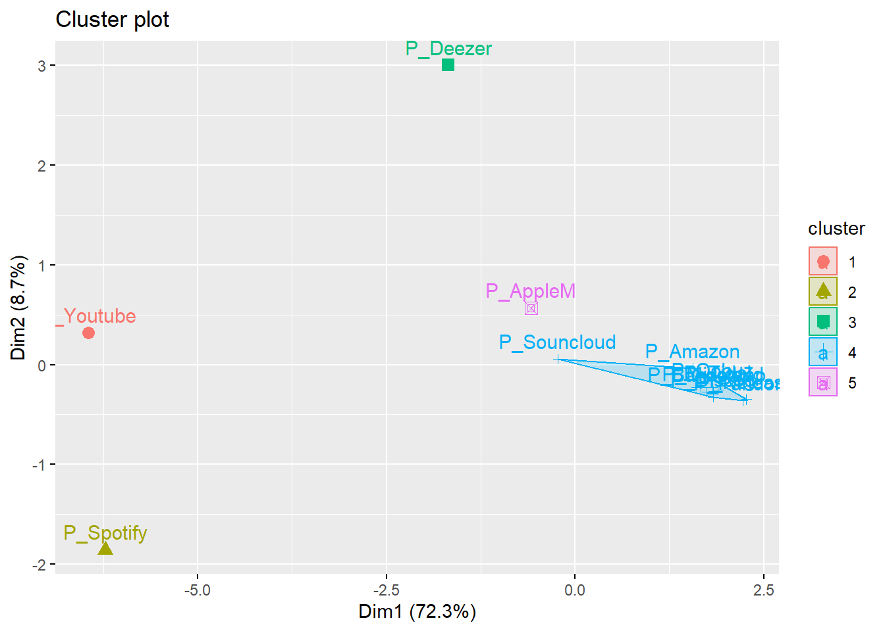
Willingness to pay
we have two question one relevant to equipment, the other to convenient
table(df$Spending)
0 euros 0 euros, 10 euros 10 euros 10 euros, 20 euros
31 1 83 2
100 euros 20 euros 200 euros 200 euros et plus
5 19 1 2
50 euros
9 df$SpendingMax[df$Spending=="0 euros"] <-0
df$SpendingMax[df$Spending=="0 euros, 10 euros"] <-10
df$SpendingMax[df$Spending=="10 euros"] <-10
df$SpendingMax[df$Spending=="10 euros, 20 euros"] <-20
df$SpendingMax[df$Spending=="20 euros"] <-20
df$SpendingMax[df$Spending=="50 euros"] <-50
df$SpendingMax[df$Spending=="100 euros"] <-100
df$SpendingMax[df$Spending=="200 euros"] <-200
df$SpendingMax[df$Spending=="200 euros et plus"] <-400
ggplot(df, aes(x=SpendingMax))+geom_bar()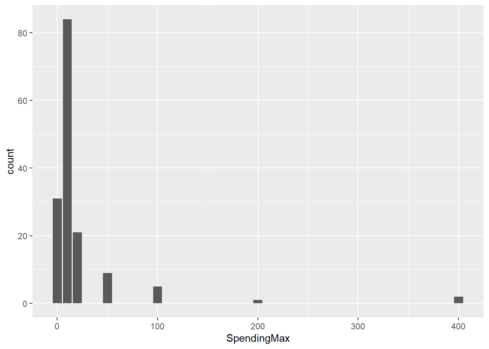
References
Chen, Liang, Jingtao Yi, Sali Li, and Tony W. Tong. 2022. “Platform Governance Design in Platform Ecosystems: Implications for Complementors’ Multihoming Decision.” Journal of Management 48 (3): 630–56. https://doi.org/10.1177/0149206320988337.
Haan, Marco A., Gijsbert Zwart, and Nannette Stoffers. 2021. “Choosing Your Battles: Endogenous Multihoming and Platform Competition.” SSRN Electronic Journal. https://doi.org/10.2139/ssrn.3847216.
Hong Kong University of Science and Technology, Tat Koon Koh, Mark Fichman, and Carnegie Mellon University. 2014. “Multihoming Users’ Preferences for Two-Sided Exchange Networks.” MIS Quarterly 38 (4): 977–96. https://doi.org/10.25300/MISQ/2014/38.4.02.
Ozalp, Hakan, and Carmelo Cennamo. 2017. “Platform Architecture, Multihoming and Complement Quality.” Academy of Management Proceedings 2017 (1): 12276. https://doi.org/10.5465/AMBPP.2017.228.
Scott Morton, Fiona M., and Susan Athey. 2021. “Platform Annexation.” SSRN Electronic Journal. https://doi.org/10.2139/ssrn.3786434.
Stewart, Kristin, and Isabella Cunningham. 2017. “Examining Consumers’ Multiplatform Usage and Its Contribution to Their Trust in Advertising: The Impact of the Device on Platform-Use Frequency and Trust in Advertising Across Platforms.” Journal of Advertising Research 57 (3): 250–59. https://doi.org/10.2501/JAR-2017-003.